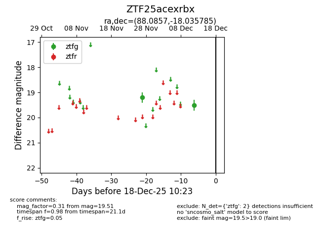
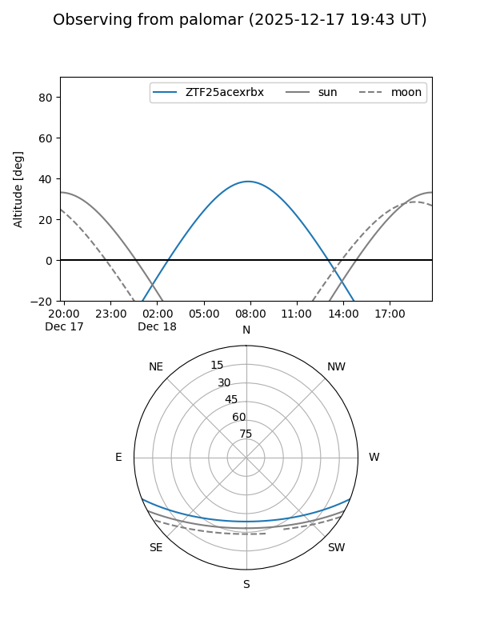

ZTF25acexrbx
Target ZTF25acexrbx at 2025-12-18 11:17
Aliases and brokers:
FINK: fink-portal.org/ZTF25acexrbx
Lasair: lasair-ztf.lsst.ac.uk/objects/ZTF25acexrbx
ALeRCE: alerce.online/object/ZTF25acexrbx
alt names
ZTF25acexrbx (ztf,fink_ztf)
Coordinates:
equatorial (ra, dec) = 88.0857,-18.03579
equatorial (HMS+DMS) = 05:52:20.56,-18:02:08.83
galactic (l, b) = (223.1050,-20.91462)
Photometry
last ztfg=19.51
2 ztfg detections
Lightcurve

Visibility


Additional plots